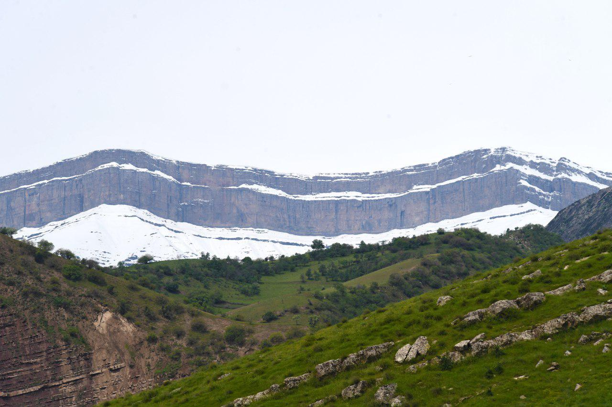

Rasmlar


Surxondaryo viloyati tog‘ va ekoturizm bilan ajralib turadi. Mintaqada tabiiy landshaftning ajoyib go‘zalligini namoyon qiladigan g‘orlar, massivlar va daralarni ko‘rish mumkin. Bu joylar sayyohlar va sarguzasht izlovchilarning katta eʼtiborini tortadi.
Bu yerda uzoq o‘tmish yodgorliklari bilan tanishishingiz mumkin. Shu jumladan ochiq osmon ostidagi muzeylar, buddaviylar ibodatxonalari, qadimgi aholi punktlari xarobalari, qadimiy qalʼalar, ibodat joylarini ko‘rsatib o‘tish joiz.
Surxondaryo vodiysi yangi madaniyat rivojining sarchashmasi bo‘lgan. U tarixga taniqli shoirlar, dinshunoslar, islom dini arboblari, faylasuflarning nomlarini berdi. Ularning sharofati bilan o‘rta asrlarning ajoyib meʼmoriy yodgorliklari paydo bo‘ldi. Ushbu yodgorliklarning ahamiyati butun Islom olami uchun muhim.
Surxondaryo viloyati — Oʻzbekiston Respublikasi tarkibidagi viloyat. 1941-yil 6-martda tashkil etilgan (1925-yil 29-iyundan Surxondaryo okrugi boʻlgan). 1960-yil 25-yanvarda Qashqadaryo viloyati bilan qoʻshilgan. 1964-yil fevralda qaytadan tashkil qilindi. Respublikaning janubi-sharqida, Surxon-Sherobod vodiysida joylashgan. Viloyat nomi vohadan oqib oʻtuvchi „Surxon“ (fors-tojik: „qizil“) daryosi nomidan kelib chiqqan. Janubidan Amudaryo boʻylab Afgʻoniston, shimoliy, shimoli-sharq va sharqdan Tojikiston, janubi-gʻarbdan Turkmaniston, shimoli-gʻarbdan Qashqadaryo viloyati bilan chegaradosh. Maydoni 20,1 ming km². Aholisi 2,743,196 kishi (2022-yil 1-yanvar holatiga koʻra). Tarkibida 14 tuman (Angor, Bandixon, Boysun, Denov, Jarqoʻrgʻon, Muzrabot, Oltinsoy, Sariosiyo, Termiz, Uzun, Sherobod, Shoʻrchi, Qiziriq, Qumqoʻrgʻon), 8 shahar (Boysun, Denov, Jarqoʻrgʻon, Termiz, Shargʻun, Sherobod, Shoʻrchi, Qumqoʻrgʻon), 114 ta shaharcha, 865 ta qishloq aholi punktlari mavjud (2020). Markazi — Termiz shahri.